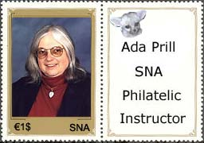
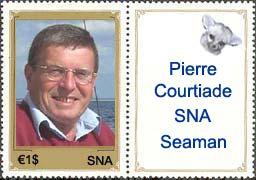

|
IN THE RCSD NEWSGROUP The SNAPO shows on this page stamps that are dedicated to personalities who actively participate(d) in the life of the rec.collecting.stamps.discuss newsgroup. Tracy Barber, one of the founders of the SNA, was till now one of the most active participants in the RCSD. On the 28th March 2004 he wrote in a the memorable posting: "I have a feeling that it may be time to move on into lurk mode and hide amongst those that watch and see what happens. Those who cheer for the sidelines with a 1 hand clap. Those who wait 5 years to enter a message. Those who hide because they don't want their 'Net addys harvested. Those who don't want to be sparring with dweebs, drones and trolls. I have started giving them more respect lately..." On the 31st of March 2004 the SNA Postal Administration (SNAPO) has issued a miniature sheet that renders homage to his contribution to the RCSD newsgroup and to the SNA site.
Ada, with her usual humor, posted: "Victor, I
would love to be on an SNA stamp - as long as SNA doesn't require its stamp
subjects to be dead! (I'm not THAT eager to be on a stamp...)." Fortunately
we are both alive, as much Ada as the designer of SNA stamps. Good
news for all fans of Spanish North Africa stamps: Ada recently accepted to start a beginners
course on SNA philately. She is surely the best qualified
for this tough job, one of the most demanding due to the variety and the
rarity of SNA stamps. For Ada's credentials please visit:
http://www.stampcampus.org/edu_stampcampus_demo.htm .  A plein air painter is one who goes outside and finds a place to paint. Thomas Loepp, the most famous living SNA artist, had been painting outside in the streets New York City for some 15 years. The stamp below shows a self-portrait of the artist (lithography), possible engraved shortly after he fell down from the top of a SNA camel. You can read more about him on: http://loepp.home.mindspring.com/tom/paper/lith/lyell.html
A known collector of insufficiently franked SNA covers, and also of France and Switzerland stamps, Pierre is, together with Didier, the ambassador of the French speaking regions on RCSD. More on: http://loepp.home.mindspring.com/tom/index.html  We invite other active RCSD participants to send us their portraits (if possible sized 100 x 125 pixels), a few words about them, and the URL of their web site (if applicable). The presented sheet and stamps are immediately obtainable on the philatelic market, at our serious SNA authorized dealers. The stamps are printed at the Courvoisier SNA printing office in Ciudad de Leon, the print run being of only 1,000,000 pieces.
|